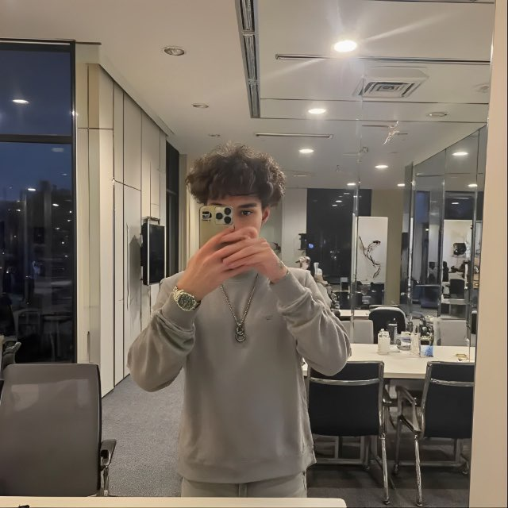

Мамєдов Дмитро
 Україна, Київ
Україна, Київ
Люблю створювати інтерфейси, вивчаю HTML та CSS, прагну до постійного розвитку
Відкритий до нових проєктів і знайомств!
Про мене
Раніше я займався бекенд-розробкою — писав проєкти на Django, працював із базами даних, створював API та серверну логіку
Але з часом зрозумів, що мені більше цікаво працювати з інтерфейсами, дизайном та взаємодією з користувачем
Тому зараз повністю зосереджений на фронтенді: вивчаю HTML, CSS та у найближчий час почну вивчати Js і також React
Мої навички
HTML — знаю основи: верстав прості сторінки
CSS — вивчаю й покращую навички
JavaScript — поки не використовую на практиці, але планую активно вивчати найближчим часом
React — ще не почав вивчати
Python — створював бекенд-проєкти на Django: налаштовував маршрути, шаблони, робив прості REST API, працював із базами даних